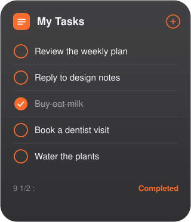

Widget first
Small through extra large. Circular checkboxes, due dates, and a Completed toggle. Completing a row talks to Google Tasks immediately.
A Mac widget that borrows Reminders’ circles, colors, and quiet list. Open the app when you need every list. Check things off without opening a browser.

Small through extra large. Circular checkboxes, due dates, and a Completed toggle. Completing a row talks to Google Tasks immediately.
Sidebar of lists, strikethrough on done, Show Completed, new reminder field. Same orange, green, and red list colors as Reminders.
Sign in once. Tokens stay on the Mac so the widget still works when the window is closed. Sign out deletes them.
macOS 14 or later. After the first launch, the widget shows up in Edit Widgets.
Until the build is notarized, macOS may ask you to Control-click the app and choose Open. Until Google verifies the OAuth client, only listed test users can sign in.